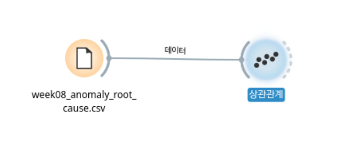
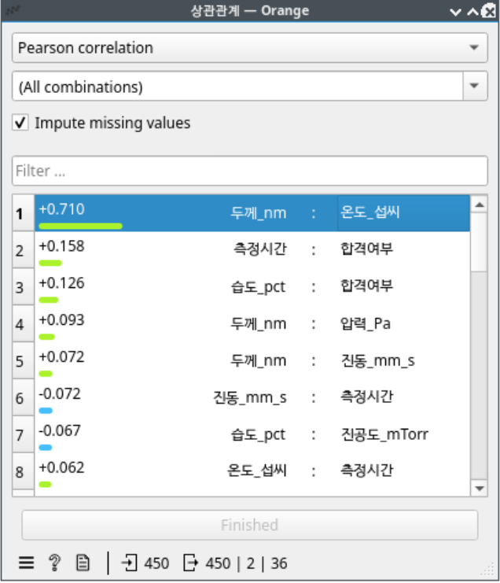
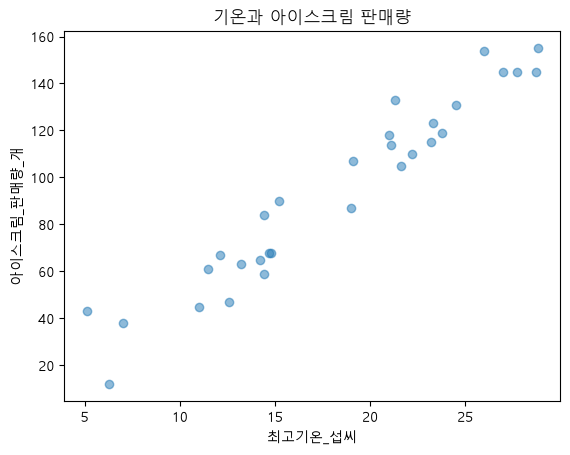
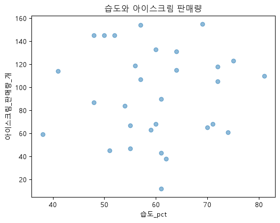

공정 이상과 원인 후보 찾기
오늘의 질문: "여러 공정 값 중 불합격과 관련 있어 보이는 것을 어떻게 찾고, 그것을 '원인'이라고 불러도 될까?"
- 공정 기록
- 450건
- 불합격
- 50건 (11.1%)
- 온도-두께 상관계수
- 0.71
- 진공도 범위 밖 불합격률
- 25.6%
오늘의 학습 목표
함께 움직이는 정도 읽기
여러 변수를 나란히 비교하기
"원인 후보"로 말하기
- 산점도 모양과 상관계수(-1~1)로 "같이 오른다 / 반대로 / 관계없다"를 구분한다.
- Orange3로 먼저 훑어본 뒤,
corr()와 조건 검색(|,&)으로 직접 확인한다. - 관계없는 변수와 나란히 비교하고, 근거 숫자가 들어간 "원인 후보" 문장을 쓴다.
왜 이걸 배워야 할까?
- 불량이 나오면 "그때 무엇이 달랐나"를 찾아야 한다. 오늘 데이터의 공정 값 7개는 짝지으면 21쌍이라, 어디부터 볼지 정할 도구가 필요하다.
- 상관관계는 용의자 명단(원인 후보)까지만 만들어 준다. 범인 확정은 따로 확인해야 한다.
지난 시간 복습
- 1차시 여러 열 함께 보기, "원인 후보"로 말하기 · 5차시 조건 하나로 이상값 찾기(오늘은 조건 두 개를 묶는다)
- 6차시 산점도 · 7차시
groupby로 설비끼리 나란히 비교
오늘의 데이터 — 생활 예제와 반도체 데이터
개념은 쉬운 예제(아이스크림 가게 기록)로 익히고, 핵심은 반도체 데이터로 확인한다. 두 데이터 모두 교육용 가상 데이터다(데이터 설명서).
쉬운 예제 데이터 — 아이스크림 가게 30일 기록
data/weekly/week08/week08_easy_weather_sales.csv (30행 7열, 한 행 = 하루).
| 열 이름 | 뜻 | 반도체 데이터에서 같은 역할 |
|---|---|---|
최고기온_섭씨 | 그날 최고기온(℃) | 온도_섭씨 |
아이스크림_판매량_개, 핫초코_판매량_잔 | 그날 판매량 | 두께_nm |
습도_pct | 판매·평가와 관계없게 만든 비교용 열 | 습도_pct(비교용 열) |
냉동고온도_섭씨 | 냉동고 온도. 너무 차가우면 딱딱, 너무 따뜻하면 물러진다 | 진공도_mTorr |
손님평가 | 1 = 좋음, -1 = 불만 | 합격여부(1 = 합격, -1 = 불합격) |
반도체 데이터 — 열이 공장에서 뜻하는 것
data/weekly/week08/week08_anomaly_root_cause.csv (450행 12열, 한 행 = 설비 한 대의 작업 한 번).
챔버는 웨이퍼를 넣고 작업하는 밀폐된 방이다(오븐 안쪽).
| 열 이름 | 공장에서 뜻하는 것 | 생활 속 비유 |
|---|---|---|
설비번호, 공정명 | 어느 기계(EQ-01~EQ-04)가 어떤 작업을 했는지 | 어느 오븐으로 무엇을 구웠는지 |
온도_섭씨 | 챔버 안 온도(℃) | 오븐 온도 |
압력_Pa | 챔버 압력 기록(가상 값, 크기를 실제 조건으로 해석하지 않는다) | 압력솥 안의 압력 |
진공도_mTorr | 챔버 안에 남은 기체의 압력(mTorr는 아주 낮은 압력을 재는 단위). 작을수록 공기를 많이 뺀 상태 | 진공 포장 용기 안의 공기 |
두께_nm | 웨이퍼 위에 쌓인 막의 두께(nm = 10억분의 1m) | 페인트 두께 |
진동_mm_s, 냉각수온도_섭씨 | 설비 떨림, 설비를 식히는 물의 온도 | 세탁기 떨림, 엔진 냉각수 |
습도_pct | 클린룸(1차시: 먼지를 극도로 줄인 작업실) 공기 속 물기(%) | 일기예보의 습도 |
합격여부 | 검사 결과. 1 = 합격, -1 = 불합격 | 시험 합격/불합격 |
_pct는 퍼센트(%)를 뜻한다.
| 표기 | 읽는 법 | 뜻 |
|---|---|---|
pct, % (습도_pct) | 퍼센트 | 백분율. 100 중에 몇인지. 습도 45%는 공기가 머금을 수 있는 물기의 45% |
| 측정시간 | 로트번호 | 설비번호 | 공정명 | 온도_섭씨 | 압력_Pa | 진공도_mTorr | 두께_nm | 진동_mm_s | 냉각수온도_섭씨 | 습도_pct | 합격여부 |
|---|---|---|---|---|---|---|---|---|---|---|---|
| 2024-03-01 00:00 | LOT-0404 | EQ-02 | 식각 | 303.4 | 1017.3 | 4.92 | 104.66 | 0.682 | 19.52 | 47.4 | 1 |
| 2024-03-01 04:00 | LOT-0094 | EQ-04 | 증착 | 302.1 | 1016.5 | 5.12 | 100.03 | 0.472 | 20.90 | 50.4 | 1 |
| 2024-03-01 07:00 | LOT-0408 | EQ-02 | 증착 | 295.6 | 1018.4 | 5.24 | 98.62 | 0.636 | 19.00 | 45.7 | -1 |
상관관계 — 그림으로 먼저 감 잡기
두 값을 짝지어 점을 찍은 산점도(6차시)의 모양은 크게 세 가지다.
예시 일러스트레이션 · 가상 숫자로 그린 그림
같이 오른다 — 공부 시간이 길수록 점수도 높다. 점들이 오른쪽 위로 올라간다. (r = 0.89)
반대로 움직인다 — 기온이 오를수록 핫팩은 덜 팔린다. 점들이 오른쪽 아래로 내려간다. (r = -0.90)
관계없다 — 키가 크다고 시험 점수가 높지 않다. 점들이 방향 없이 구름처럼 퍼져 있다. (r = -0.02)
상관계수 — "함께 움직이는 정도" 점수
산점도 모양을 -1~1 사이 숫자 하나로 요약한 것이 상관계수(r)다. 부호는 방향(+ 같이 오름, - 반대로), 크기는 세기다.
| 크기 |r| (부호는 뗀다) | 이 과정에서 부르는 이름 | 그림으로 보면 |
|---|---|---|
| 0.7 이상 | 강함 | 좁은 띠가 뚜렷하다 |
| 0.3 ~ 0.7 | 중간 | 방향은 보이지만 퍼져 있다 |
| 0.3 미만 | 약함(뚜렷한 관계 없음) | 거의 구름이다 |
- 경계(0.3, 0.7)는 이 과정의 학습용 기준이다. 분야마다 다르다.
- 상관계수는 한 방향(곧은 띠)만 잰다. "너무 낮아도, 너무 높아도 나쁜" 관계는 0에 가깝게 나올 수 있다.
데이터 분석을 처음 배우는 사람이야. 생활 속에서 '같이 오르는 두 값', '반대로 움직이는 두 값', '관계없는 두 값'의 예를 각각 2개씩 들어줘. 수식 없이 설명해줘.상관관계 ≠ 인과관계 — 왜 "원인 후보"까지만 말할까
아이스크림 판매량과 물놀이 사고는 함께 늘어난다. 하지만 아이스크림이 사고를 일으키는 것이 아니라, 둘 다 더운 날씨에 늘어날 뿐이다. 이런 숨은 원인을 제3의 요인이라고 한다.
예시 일러스트레이션 · 개념도
주황 화살표가 진짜 영향의 방향이다. 빨간 점선은 "같이 움직인다"(상관관계)일 뿐이다. 오늘 가게 기록의 아이스크림-핫초코 -0.85도 같은 구조다(둘 다 기온을 따라 움직인다. 아래 "산점도와 상관계수" 절에서 직접 계산한다).
- ① 제3의 요인: 둘 다 다른 것(날씨)을 따라 움직였을 수 있다.
- ② 우연: 기록이 적으면 관계없어도 같이 움직일 수 있다.
- ③ 데이터는 "왜"를 적지 않는다: 확정하려면 그 값 하나만 바꿔 보는 실험이 필요하다.
- 비유: 현장 근처에 있던 사람은 용의자이지 범인이 아니다. 함께 움직이는 값은 원인 후보다.
| 데이터로 말할 수 있는 것 | 데이터만으로는 아직 말할 수 없는 것 |
|---|---|
| "진공도가 범위를 벗어난 기록에서 불합격이 많았다. 진공도는 원인 후보다." | "진공도 때문에 불합격이 났다." — 다른 것도 함께 달랐을 수 있다. |
① Orange3로 먼저 훑어보기
week08_anomaly_root_cause.csv를 열어 연결하면 숫자 열의 모든 쌍을 상관계수 크기순으로 보여준다.
처음이라면 부록: Orange3 시작하기.


- 1위만 튀어나와 있다 — 두께-온도 +0.710(강함). 2위 측정시간-합격여부(0.158), 3위 습도-합격여부(0.126)는 모두 "약함"이다. Orange3는 날짜·시간도 숫자로 바꿔 순위표에 넣는다.
- 약한 점수는 우연으로도 나온다 — 측정시간·습도는 합격여부와 관계없게 만든 값인데도 0.1대가 나왔다. 원인 후보로 올리지 않는다.
- 진공도-합격여부(약 -0.02)는 아래쪽에 있다(목록을 아래로 내리거나 Filter 칸에 "진공도"를 입력하면 보인다) — 정말 관계가 없을까? 파이썬에서 범위 밖/안으로 나눠 확인한다.
② 파이썬으로 확인하기 — 데이터 읽고 기준선 구하기
개념은 쉬운 예제(아이스크림 가게 기록)로 익히고, 핵심만 뒤의 "반도체 데이터로 확인하기"에서 확인한다.
import pandas as pd
shop = pd.read_csv("../../data/weekly/week08/week08_easy_weather_sales.csv", encoding="utf-8-sig")
print(shop.shape)
shop.head()(30, 7)
날짜 최고기온_섭씨 습도_pct 아이스크림_판매량_개 핫초코_판매량_잔 냉동고온도_섭씨 손님평가
0 2024-03-01 7.0 62 38 78 -19.4 1
1 2024-03-04 6.3 61 12 79 -16.9 1
2 2024-03-07 15.2 61 90 61 -16.7 1
3 2024-03-10 14.4 38 59 61 -22.3 -1
4 2024-03-13 5.1 61 43 92 -19.1 1
bad_all = shop[shop["손님평가"] == -1]
print("불만인 날:", len(bad_all))
print(f"전체 불만률: {len(bad_all) / len(shop) * 100:.1f}%")불만인 날: 8 전체 불만률: 26.7%
이 26.7%가 기준선이다. 이보다 훨씬 높은 날들이 있으면 눈여겨본다.
산점도와 상관계수 — 그림 먼저, 점수는 나중
import matplotlib.pyplot as plt
plt.rcParams["font.family"] = "Malgun Gothic" # 한글 글꼴(Windows). Mac은 "AppleGothic"
plt.rcParams["axes.unicode_minus"] = False # 음수 부호(-)가 네모로 깨지지 않게
plt.scatter(shop["최고기온_섭씨"], shop["아이스크림_판매량_개"], alpha=0.5)
plt.xlabel("최고기온_섭씨")
plt.ylabel("아이스크림_판매량_개")
plt.title("기온과 아이스크림 판매량")
plt.show()
정답 노트북 실행 결과 — 오른쪽 위로 올라가는 "같이 오른다" 모양. alpha=0.5는 점을 반투명하게 하고, plt.title()은 그래프 맨 위 제목이다.
A.corr(B)는 A 열과 B 열의 상관계수를 계산한다. round(값, 2)는 숫자 하나를 소수 둘째 자리까지 반올림한다
(7차시 .round(1)과 같은 일을 숫자 하나에 할 때 쓰는 모양).
r_ice = shop["최고기온_섭씨"].corr(shop["아이스크림_판매량_개"])
print("기온-아이스크림 상관계수:", round(r_ice, 2))
r_hot = shop["최고기온_섭씨"].corr(shop["핫초코_판매량_잔"])
print("기온-핫초코 상관계수:", round(r_hot, 2))
r_ice_hot = shop["아이스크림_판매량_개"].corr(shop["핫초코_판매량_잔"])
print("아이스크림-핫초코 상관계수:", round(r_ice_hot, 2))기온-아이스크림 상관계수: 0.97 기온-핫초코 상관계수: -0.89 아이스크림-핫초코 상관계수: -0.85
- 0.97은 같이 오름(강함), -0.89는 반대로 움직임(강함)이다.
- -0.85: 핫초코가 덜 팔려서 아이스크림이 팔린 게 아니다. 둘 다 기온(제3의 요인)을 따라 움직였다.
관계없는 열과 나란히 비교하기
"0.97이 크다"는 무엇과 비교해서일까? 관계없게 만든 비교용 열(습도)과 나란히 놓는다.
plt.scatter(shop["습도_pct"], shop["아이스크림_판매량_개"], alpha=0.5)
plt.xlabel("습도_pct")
plt.ylabel("아이스크림_판매량_개")
plt.title("습도와 아이스크림 판매량")
plt.show()
r_humid_ice = shop["습도_pct"].corr(shop["아이스크림_판매량_개"])
print("습도-아이스크림 상관계수:", round(r_humid_ice, 2))
습도-아이스크림 상관계수: 0.02
관계없는 열은 구름 모양에 0.02다. 그래서 기온-아이스크림 0.97이 특별히 크다고 말할 수 있다.
정상 범위 밖 값 찾기 — 상관계수가 놓치는 경우
"너무 낮아도, 너무 높아도" 나쁜 값은 상관계수가 0에 가깝게 나올 수 있다. 그래서 정상 범위 밖/안으로 나눠 나쁜 결과의 비율을 비교한다.
|= 또는(범위 밖: 아래 경계보다 작다 또는 위 경계보다 크다),&= 그리고(범위 안).|는 Shift +\(한글 키보드는₩).- 조건마다 괄호
( )로 감싼다(빼면TypeError).or/and를 쓰면ValueError가 난다.
냉동고 학습용 정상 범위는 -20~-16℃다. 손님평가는 1과 -1뿐이라, 여기서 상관계수는 "냉동고 온도가 높을수록 좋음(1)이 많은가"를 잰다
(+면 값이 클수록 좋음 쪽, -면 불만 쪽).
r_freezer = shop["냉동고온도_섭씨"].corr(shop["손님평가"])
print("냉동고온도-손님평가 상관계수:", round(r_freezer, 2))
freezer_out = shop[(shop["냉동고온도_섭씨"] < -20) | (shop["냉동고온도_섭씨"] > -16)]
freezer_in = shop[(shop["냉동고온도_섭씨"] >= -20) & (shop["냉동고온도_섭씨"] <= -16)]
print(f"범위 밖: {len(freezer_out)}일, 범위 안: {len(freezer_in)}일")
bad_out = len(freezer_out[freezer_out["손님평가"] == -1]) / len(freezer_out) * 100
bad_in = len(freezer_in[freezer_in["손님평가"] == -1]) / len(freezer_in) * 100
print(f"범위 밖 불만률: {bad_out:.1f}%")
print(f"범위 안 불만률: {bad_in:.1f}%")냉동고온도-손님평가 상관계수: -0.06 범위 밖: 8일, 범위 안: 22일 범위 밖 불만률: 75.0% 범위 안 불만률: 9.1%
bad_out 읽는 법: freezer_out 중 불만(-1)인 날만 골라 개수를 세고(len) ÷ 범위 밖 전체 날 수 × 100.
분모는 "무엇 중에"에 해당하는 집단이다(7차시 수율의 분모와 같다).
| 냉동고 구간 | 너무 차가움(-20 미만) | 범위 안(-20~-16) | 너무 따뜻함(-16 초과) |
|---|---|---|---|
| 불만 | 4일 중 3일(75.0%) | 22일 중 2일(9.1%) | 4일 중 3일(75.0%) |
차가운 쪽에서는 "온도가 내려갈수록 불만↑", 따뜻한 쪽에서는 "온도가 올라갈수록 불만↑"다. 방향이 반대인 두 관계가 섞여 상관계수에서는 서로 지워져 0 근처(-0.06)가 된다(가운데가 낮고 양 끝이 높은 U자). 점수가 낮다고 "관계없다"고 단정하지 않는다.
다른 열도 같은 방법으로 — 왜 여러 변수를 함께 봐야 할까
"범위 밖이면 불만이 많다"가 특별한지 알려면 다른 열에도 같은 계산을 해서 나란히 놓는다. 습도 50~70%(가게가 쾌적하다고 보는 학습용 범위)로 같은 계산을 한다.
humid_out = shop[(shop["습도_pct"] < 50) | (shop["습도_pct"] > 70)]
humid_in = shop[(shop["습도_pct"] >= 50) & (shop["습도_pct"] <= 70)]
print(f"범위 밖: {len(humid_out)}일, 범위 안: {len(humid_in)}일")
humid_bad_out = len(humid_out[humid_out["손님평가"] == -1]) / len(humid_out) * 100
humid_bad_in = len(humid_in[humid_in["손님평가"] == -1]) / len(humid_in) * 100
print(f"범위 밖 불만률: {humid_bad_out:.1f}%")
print(f"범위 안 불만률: {humid_bad_in:.1f}%")범위 밖: 10일, 범위 안: 20일 범위 밖 불만률: 30.0% 범위 안 불만률: 25.0%
습도는 30.0% vs 25.0%로 차이가 작다. 냉동고(75.0% vs 9.1%)와 나란히 놓아야 냉동고의 차이가 특별하다고 말할 수 있다.
원인 후보로 말하기 — 오늘의 결론 문장
좋은 문장에는 근거 숫자, 무엇의 후보인지, "원인 후보"라는 표현, 다음에 확인할 것이 들어간다.
| 아쉬운 문장 | 고친 문장 |
|---|---|
| "냉동고 온도가 불만의 원인이다." — 숫자 없이 단정했다. | "범위를 벗어난 날 불만률이 9.1%에서 75.0%로 높았다. 냉동고 온도는 불만의 원인 후보다." |
| "기온은 원인 후보다." — 무엇의 후보인지 없다. | "기온은 아이스크림 판매량의 원인 후보다(r = 0.97)." |
| "습도도 원인 후보다." — 비교용 열이고 차이가 작다. | "습도는 30.0% vs 25.0%로 차이가 작아 원인 후보로 올리지 않는다." |
반도체 데이터로 확인하기
오늘의 질문에 답하는 핵심만 반도체 데이터(df)로 확인한다. 코드는 위 쉬운 예제와 같은 모양이다(노트북 7~8단계).
확인 1 — 불합격 기준선은?
df = pd.read_csv("../../data/weekly/week08/week08_anomaly_root_cause.csv", encoding="utf-8-sig")
print(df.shape)
fail_all = df[df["합격여부"] == -1]
print("불합격 건수:", len(fail_all))
print(f"전체 불합격률: {len(fail_all) / len(df) * 100:.1f}%")(450, 12) 불합격 건수: 50 전체 불합격률: 11.1%
공장 말로 읽기: 450건 중 50건이 불합격(합격여부 -1)이다. 11.1%가 기준선이다.
확인 2 — Orange3 1위 온도-두께는 정말 강한가?
r_temp = df["온도_섭씨"].corr(df["두께_nm"])
print("온도-두께 상관계수:", round(r_temp, 2))r_humid = df["습도_pct"].corr(df["두께_nm"])
print("습도-두께 상관계수:", round(r_humid, 2))온도-두께 상관계수: 0.71 습도-두께 상관계수: -0.01
공장 말로 읽기: 비교용 습도(-0.01) 옆에 놓으니 0.71은 강하다. 온도는 두께의 원인 후보다. 불합격의 후보라는 뜻은 아니다.
확인 3 — 순위표 아래쪽 진공도는 불합격과 관계없을까?
합격여부도 1/-1뿐이라, 상관계수는 "진공도가 클수록 합격(1)이 많은가"를 잰다.
r_vac = df["진공도_mTorr"].corr(df["합격여부"])
print("진공도-합격여부 상관계수:", round(r_vac, 2))
vac_out = df[(df["진공도_mTorr"] < 4.5) | (df["진공도_mTorr"] > 5.5)]
vac_in = df[(df["진공도_mTorr"] >= 4.5) & (df["진공도_mTorr"] <= 5.5)]
print(f"범위 밖: {len(vac_out)}건, 범위 안: {len(vac_in)}건")
fail_out = len(vac_out[vac_out["합격여부"] == -1]) / len(vac_out) * 100
fail_in = len(vac_in[vac_in["합격여부"] == -1]) / len(vac_in) * 100
print(f"범위 밖 불합격률: {fail_out:.1f}%")
print(f"범위 안 불합격률: {fail_in:.1f}%")진공도-합격여부 상관계수: -0.02 범위 밖: 78건, 범위 안: 372건 범위 밖 불합격률: 25.6% 범위 안 불합격률: 8.1%
공장 말로 읽기: 상관계수는 거의 0인데 범위 밖 불합격률이 범위 안의 약 3배이고 기준선 11.1%보다도 높다. 냉동고와 같은 U자다(강사가 미리 세어 둔 구간별 결과).
| 진공도 구간 | 너무 낮음(4.5 미만) | 정상 범위(4.5~5.5) | 너무 높음(5.5 초과) |
|---|---|---|---|
| 불합격 | 39건 중 9건(23.1%) | 372건 중 30건(8.1%) | 39건 중 11건(28.2%) |
확인 4 — 온도도 범위를 벗어나면 불합격이 많을까?
temp_out = df[(df["온도_섭씨"] < 295) | (df["온도_섭씨"] > 305)]
temp_in = df[(df["온도_섭씨"] >= 295) & (df["온도_섭씨"] <= 305)]
print(f"범위 밖: {len(temp_out)}건, 범위 안: {len(temp_in)}건")
temp_fail_out = len(temp_out[temp_out["합격여부"] == -1]) / len(temp_out) * 100
temp_fail_in = len(temp_in[temp_in["합격여부"] == -1]) / len(temp_in) * 100
print(f"범위 밖 불합격률: {temp_fail_out:.1f}%")
print(f"범위 안 불합격률: {temp_fail_in:.1f}%")범위 밖: 92건, 범위 안: 358건 범위 밖 불합격률: 9.8% 범위 안 불합격률: 11.5%
파이썬 실습: 관계 찾고 원인 후보 문장 쓰기
학생용 노트북 week08_student.ipynb와 실습지로 진행한다.
핵심 용어 카드
상관계수
- 한 줄 설명
- 함께 움직이는 정도를 -1~1 점수로 나타낸 값. 부호는 방향, 크기는 세기.
- 데이터에서의 예
- 기온-아이스크림 0.97, 온도-두께 0.71. U자 관계(냉동고 -0.06, 진공도 -0.02)는 0 근처로 나온다.
인과관계
- 한 줄 설명
- 한 값의 변화가 실제로 다른 값의 변화를 일으키는 관계.
- 데이터에서의 예
- 상관계수만으로는 확인할 수 없다. 조건을 바꿔 보는 실험이 필요하다.
제3의 요인
- 한 줄 설명
- 두 값을 함께 움직이게 만드는 숨은 다른 원인.
- 데이터에서의 예
- 아이스크림-핫초코 -0.85를 만든 기온.
원인 후보
- 한 줄 설명
- 결과와 함께 움직여 "먼저 확인해 볼 곳"으로 떠오른 값. 용의자이지 범인이 아니다.
- 데이터에서의 예
- 진공도 범위 밖 25.6% vs 범위 안 8.1% → 불합격의 원인 후보.
정상 범위(규격)
- 한 줄 설명
- 공정 값이 들어 있어야 한다고 미리 정해 둔 허용 범위.
- 데이터에서의 예
- 진공도 4.5~5.5 mTorr(범위 밖 78건 중 불합격 20건 — 벗어나도 반드시 불합격은 아니다).
비교용 변수
- 한 줄 설명
- "관계없으면 이 정도가 나온다"를 보여주려고 함께 계산하는 변수(참고치).
- 데이터에서의 예
- 습도-두께 -0.01 덕분에 온도-두께 0.71이 크다는 것을 안다.
주의할 점 & 자주 발생하는 오류
ValueError: The truth value of a Series is ambiguous. Use a.empty, a.bool(), a.item(), a.any() or a.all().— 조건에or/and를 썼다.|/&로 바꾼다.TypeError: Cannot perform 'ror_' with a dtyped [float64] array and scalar of type [bool]—df[df["진공도_mTorr"] < 4.5 | df["진공도_mTorr"] > 5.5]처럼 괄호를 뺐다. 조건마다 괄호로 감싼다.ValueError: could not convert string to float: 'EQ-02'— 글자 열(설비번호)에corr()를 썼다. 숫자 열끼리만 계산한다.KeyError: '진공도'— 열 이름은진공도_mTorr다.print(df.columns)로 확인한다.NameError: name 'vac_out' is not defined— 위 셀을 건너뛰었다. 맨 위 셀부터 다시 실행한다.
- 빈칸
____을 안 채우면NameError: name '____' is not defined,SyntaxError: invalid syntax. Perhaps you forgot a comma?(기호 자리),AttributeError,KeyError: '____'등이 난다. - 한글이 네모(□)로 보이고
UserWarning: Glyph ... missing from font(s) DejaVu Sans.가 나오면plt.rcParams["font.family"] = "Malgun Gothic"줄을 먼저 실행한다(Mac은"AppleGothic"). - "상관계수가 높다 = 원인이다"도, "상관계수가 낮다 = 관계없다"(진공도)도 단정하지 않는다.
결과 정리 & 퀴즈
더 많은 문제는 실습지에 있다.
AI로 한 걸음 더 — 질문하고 코드 받아보기
- "상관관계와 인과관계는 어떻게 다른가요? 아이스크림 말고 다른 생활 예시로 설명해주세요."
- "상관계수가 0에 가까운데도 두 값 사이에 관계가 있을 수 있나요? 예를 들어주세요."
- "관계를 판단할 때 왜 관계없는 변수와 비교해 보는 게 도움이 되나요?"
cols = ["온도_섭씨", "압력_Pa", "진공도_mTorr", "진동_mm_s", "냉각수온도_섭씨", "습도_pct"]
for col in cols:
r_col = df[col].corr(df["두께_nm"])
print(f"{col} - 두께_nm: r = {r_col:.2f}")온도_섭씨 - 두께_nm: r = 0.71 압력_Pa - 두께_nm: r = 0.09 진공도_mTorr - 두께_nm: r = 0.01 진동_mm_s - 두께_nm: r = 0.07 냉각수온도_섭씨 - 두께_nm: r = 0.01 습도_pct - 두께_nm: r = -0.01
과제(다음 차시까지)
Jupyter Notebook 한 개에 작성하고, 결과가 출력된 상태로 제출한다.
- 과제 1 — 진공도와 불합격, 온도와 두께에 대해 원인 후보 문장을 하나씩 쓴다(근거 숫자, 무엇의 후보인지 포함).
- 과제 2 —
냉각수온도_섭씨와두께_nm의 산점도와 상관계수를 구하고(강의 "산점도와 상관계수" 절, 노트북 2단계의 기온-아이스크림 코드에서 열 이름만 바꾼다) 강함·중간·약함을 적는다. - 과제 3(코드 없음) — "함께 움직이지만 원인-결과는 아닌" 생활 속 예와 숨은 제3의 요인을 두세 문장으로 적는다.
핵심 질문 → 데이터 연결
- 질문: Orange3가 보여준 관계와 직접 계산한 상관계수가 같은가? 원인 후보로 삼을 만한 변수는 무엇인가?
- 답: Orange3 +0.710 =
corr()0.71. 온도는 두께의 원인 후보, 불합격에 대해서는 진공도(25.6% vs 8.1%)가 원인 후보이고 온도(9.8% vs 11.5%)는 아니다. 진공도처럼 상관계수(-0.02)가 놓치는 관계는 범위 비교로 찾는다.
다음 차시 예고
9차시에는 공정 값으로 합격/불합격을 미리 예측하는 모델을 만든다(Orange3 → 파이썬). 예측이 잘 맞아도 "원인을 안다"는 뜻은 아니다.